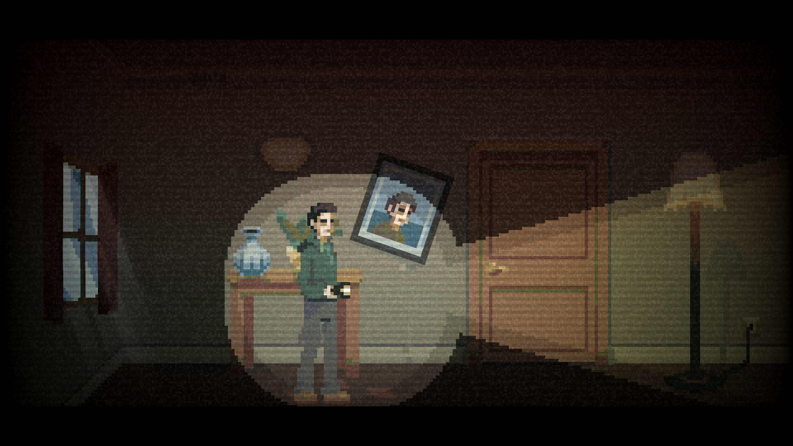
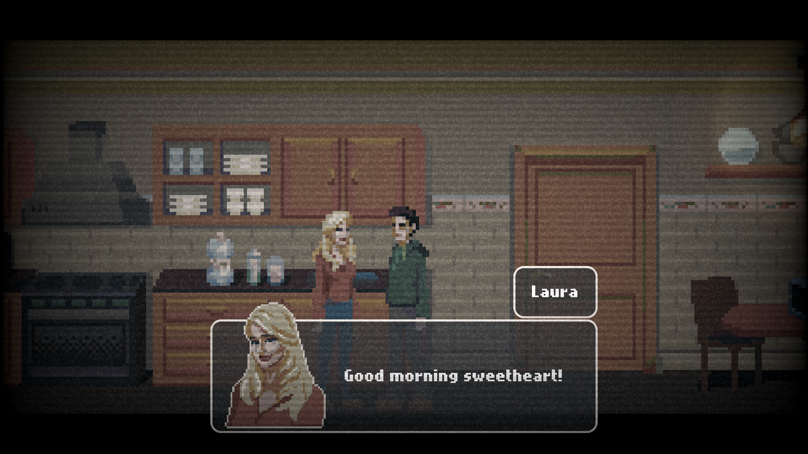

Días felices
- 
- 
-

This was the first time I used Godot, I participated in the Godot Wild Jam and together with my team this little 2D horror story came out, the first thing was to create a dialogue system that could contain response options to give the player a choice (the options system was created but was not used in the final game), the game takes advantage of a detection node that warns if the player has an area on screen to be able to create "jumpscares" and trick the player changing his position or some element of the rooms when not looking.
For interactions, an object is created that is specifically dedicated to detect if the player interacts with an area, from this, we create new inherited interactuables that specify the effect that occurs when interacting The biggest challenge was the organization of rooms and events that take place during the 4 days that the game lasts. During the day the player is responsible for performing a simple task (collect objects, interact with x elements, talk with your partner) until you go to sleep, the night arrives and the house changes. The game contains 3 different endings and lasts about 20-30 minutes.
Finished 3rd in the jam and 1st in the graphics and accessibility categories.
You can play for free in Itchio: